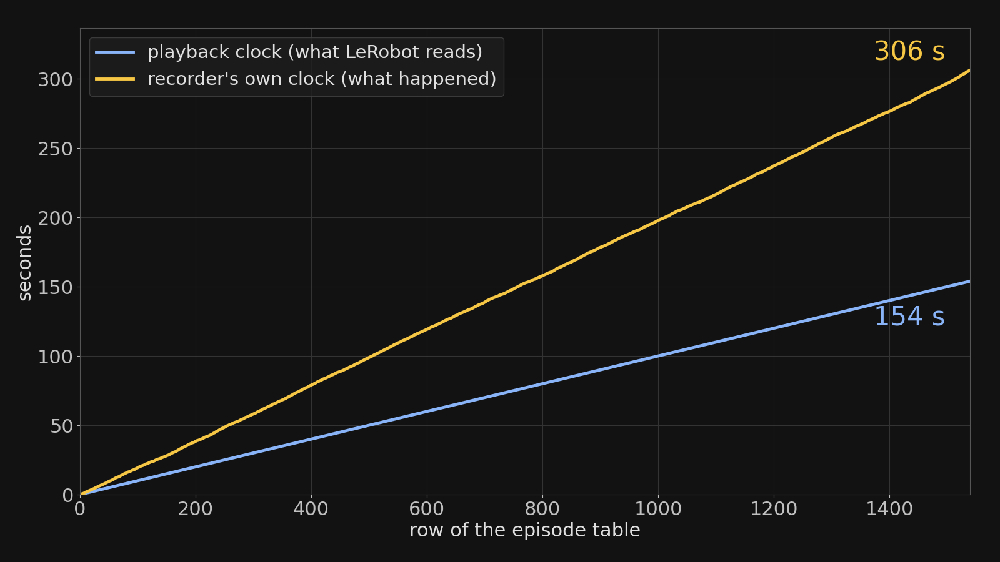

Catch the broken recording setup before its data ships.
Respite runs on a robot data vendor's computer, finds the setup causing bad data, and repairs what it can.
Live replay of a real batch
One recording station of a robotics team's batch, checked episode by episode by respite live, replayed in recording order.
Press Play to watch Respite check this batch
Last alerts
Station B goes from OK straight to STOP at its 7th episode, 11.3 minutes into its recording.
Why this matters
Bad data is expensive, and it is found late
Robot data is sold by the hour. A broken setup ruins every hour it records.
One vendor tells buyers to expect 20 to 40% of recordings thrown out.
Source: a robot data vendor's guidePhysical Intelligence is hiring an engineer just for data quality.
Source: the job postIt looks fine on video, and it isn't
Same image, logged as new
Three rows in a row from Station B's wrist camera: three timestamps, one camera frame, one image hash. The video plays smoothly, but the camera gives about 5 new frames a second while the recorder logs about 10 rows, so roughly every other row repeats an old image. In the three Station A rows below, the camera gives a new image each time.
Station B, wrist camera
Station A, overhead camera
A different setup, a different problem
Station A: a slow recorder
One Station A episode, row by row. The playback clock says 154 seconds. The recorder's own clock says 306. Training sees the first one.

Playback hid 255 minutes across Station A.
Most checks miss this
Most tools check each part of a recording on its own: is the video frozen, is data missing. The costliest problems pass those checks: a camera that never freezes but only gives half its frames. Respite checks whether the parts agree, and finds the setup causing it.
It's not just one team
We checked public datasets from 9 companies. 7 had problems that can't be normal.
What the vendor gets
A fixed copy, and a script that makes it
The same checks, before and after respite fix. The fix writes the recorder's real elapsed time into a new column and leaves the original timestamps alone, so the data still loads.
Station B's camera has to be fixed at the station. Respite marks every stale row so training can skip them, and flags the camera before more hours are recorded.
The cleanup script, first lines
Run it
On the vendor's own computer
The code is shared with pilot vendors. Once you have access:
Install
git clone https://github.com/RithikSatarla/respitelabs.git cd respitelabs pip install -e ".[readers]"
Watch a recording folder, one status per station
respite live path/to/recording
A fixed copy, with every change logged and a standalone script
respite fix path/to/batch --out path/to/batch_fixed
Check whether the parts of each recording agree
respite agree path/to/batch